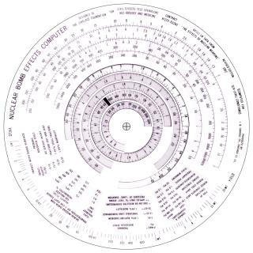
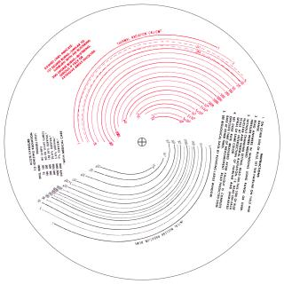
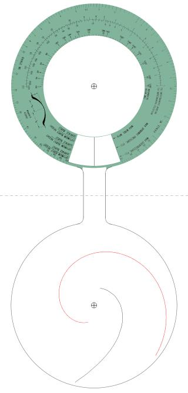
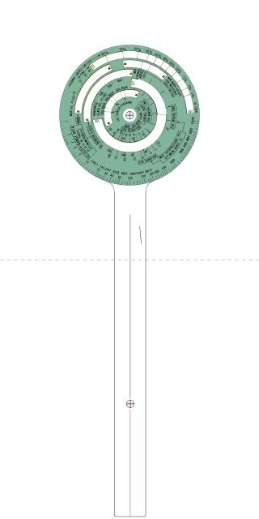
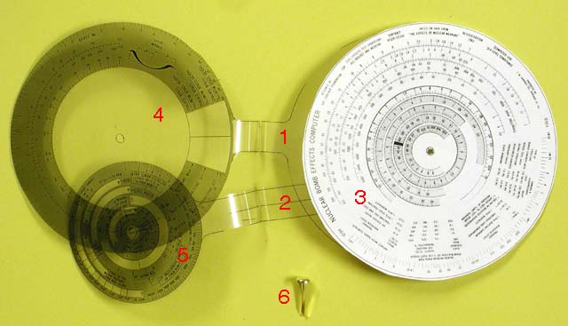
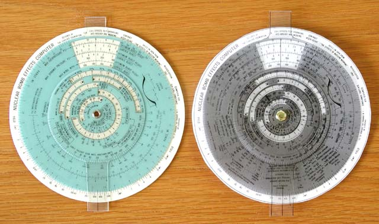
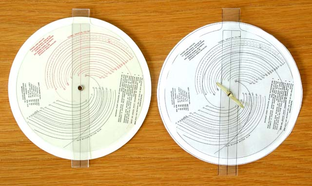

|
|
Build Your Own
by John Walker
|
|
|
Build Your Own
by John Walker
|
The Web edition of the nuclear bomb effects computer, however handy when you're online, isn't much use when operating under field conditions, in a post-Armageddon environment, or for settling thermonuclear bar bets. Fortunately, with a little time, patience, and access to a suitable printer and office supplies, you can assemble your own pocket slide rule computer, just like the original—no batteries or Internet connection required!
You'll need to be able to print graphics (ideally in colour) from images in PNG (Portable Network Graphics) format with a specified and consistent scale. The rotating discs of the bomb computer must be printed on clear plastic with white areas of the image left clear. Most printers can print transparencies intended for overhead projectors which are suitable for this purpose.
| base_front.png | base_back.png | |
|---|---|---|
|  |  | |
| rotor1.png | rotor2.png | |
|  |  |
All the slide rule components must be printed at the same scale; the relationship between pixels in the images and size on the printed components must be identical or the scales won't line up when you assemble them. To facilitate printing with a common scale, the component images all have the same width: 1575 pixels. If your image processing program allows you to specify the width as-printed for an image (setting the height as required to preserve the image's “aspect ratio”: proportion of width and height), you only need ensure that you've entered the same width before printing each image. A width specification of 5.25 inches for the 1575 pixel images will yield printed components almost identical in size to those of the original slide rule.
The rotor1.png image is quite tall when printed at this
scale; if your transparency material is much shorter than metric A4
paper, the top or bottom may be truncated when the image is printed.
If only a small portion of the outline of the bottom part is
truncated, that's no problem since you can use the folded-over top as
a cutting guide. If part of the top disc is truncated, shift the
image position down on the printed page. In case of desperation, you can
reduce the scale of all the components slightly to eliminate the
truncation or rotate the rotor1.png image on the page so
it fits on the diagonal. (If you do this you'll have to note the
scale factor you used when printing the other components and enter it
for this rotor; once you've rotated the image, its width won't be
1575 pixels any more, so you can't specify the scale implicitly by the
width).
The
base_front.png and base_back.png images, as
you may have guessed, are the front and back of the base disc of the
slide rule. The relative orientation of these images must be
preserved when they're printed on the front and back of the same
piece of paper, ideally card stock as stiff as will feed
reliably through your printer without slipping, jamming, or other
mishaps. With most laser and inkjet printers, you can load the images
into your image editing program (for example, the GIMP, XV, Paint
Shop Pro, PhotoShop, etc.), print the front image centred on the page
at the specified scale, then place the printed sheet with the front
side image back into the printer's paper tray in the correct
orientation (which may require consulting the printer's documentation
and/or some experimentation), then print the back image centred
on the other side of the same sheet.
What you want to produce through this rigmarole is a base sheet which contains the front image on one side and the back image on the other with the centre marks aligned. The relative orientation of the front and back should be such that if you hold the sheet with the the legend “YIELD 1KT” on the outermost front scale at the top, then flip the sheet over left to right, the “INSTRUCTIONS” on the back will appear at the top on the other side. If the centre marks don't line up or the relative orientation of the front and back are incorrect, label the sides and corners of a test sheet and record how it should be fed when you finally manage to print the back correctly. (Note that with rectangular paper there are four different ways to feed the sheet with the printed front scale when printing the back, only one of which is correct. If the paper is square, there are seven ways to get it wrong. It is best to use cheap paper for these experiments, and switch to fancy card stock only when you're sure you've figured out how to manage the front and back printing.)
Even though you tell the software to centre the image on the page, you may find that the front and back sides are consistently misaligned; the two centre marks are offset identically in every print attempt. If this happens, you've probably run into some eccentricity of your printer, driver software, or graphics program, and you'll have to twiddle the print position of the back until the two sides line up. Unfortunately, since every program has its own way of specifying print alignment, you may have to consult the documentation for whatever program you're using and engage in a bit of trial and error to obtain satisfactory results.
The rotors should be printed on transparent stock, such as that used to make transparencies for overhead projectors. You may wish to print one or more sets on regular paper to make sure the scale is correct and hone your cutting and folding skills before trying it with the more expensive transparency material. If your printer uses ink which takes some time to to dry on transparency material, leave the transparencies flat, printed side up, and protected from dust until the ink is completely dry.
Next, we need to cut out the base disc and rotors from the sheets on which they were printed. Both the large and small rotors will be folded along the dashed line so their front and back parts remain connected by the tab. You can fold the rotors before or after cutting them out. With the transparency material I've tried it's easier to fold them before cutting, as you have the full sheet to aid in alignment and provide a better grip. Take each rotor, being careful to fold it so the printed side is outside, and gently fold it over so the centre marks for the front and back coincide. Adjust these so the overlap is precise, then work the fold back to the dashed line (which should now run exactly along the fold), and crease it by running your fingernail or the barrel of a pen along the fold. Re-crease as necessary if the transparency material has a tendency to un-fold itself.
Now it's time to summon those skills you learnt in kindergarten to cut out the rotors and base disc from the printed sheets. It doesn't matter whether you cut just inside or outside the guide lines, but for best appearance try to be consistent and don't weave back and forth across the line. If you've previously folded the rotors, cutting across the folded tab will tend to un-fold it; re-crease the folds when you're done. If you slip and spoil a component while cutting it out—there's no “Undo” command in the real world—just print another and try again.
The slide rule will work best if the centre holes in the components are all exactly centred, as circular as possible, and no larger than the paper fastener around which they pivot. Most office paper punches do not allow inserting paper deep enough to punch a hole where required, so some creativity is required. I made the hole in the centre disc (stiff paper), by boring a hole with an electric drill and high-speed metal bit. using a block of wood as a base. This is overkill, to be sure, but then we're making a nuclear bomb computer!
The drill bit tends to chew up the transparency material I used, leaving ragged edges. (There are several kinds of printable transparencies, however, and others may behave differently.) I then tried melting the centre holes with a conical soldering iron tip heated to the normal soldering temperature of 450°C, and this worked perfectly—as long as I was careful to properly centre the tip on the centre cross and stop as soon as the hole reached the proper diameter, the result was round and well centred. When making a hole, I placed the transparency material over the hole in the sponge used to clean the soldering iron tip—this supported it around the centre mark while I was melting the hole. You might want to practise with some of the transparency material left over when you cut out the rotors to see how it behaves and sharpen your skill. If you've printed the rotors on, say, nitrocellulose-based film, burning holes in them with a soldering iron is a distinctly poor idea. (“Coming up after the break, local programmer making a nuclear bomb computer blows himself up and burns down the house.”)

The components are now ready to assemble into the complete slide rule. The original bomb computer used a nice round rivet in the centre; if you can locate such a thing (look in sewing supplies) that's great, but unless you plan to use your bomb computer frequently, a regular brass paper fastener will work fine. Unfold the two rotors and stack the items in the following order on a flat working surface with the centre holes approximately lined up.
rotor1.png (thermal and
radiation curves)rotor2.pngrotor1.png top image)rotor2.png top image)(Note that the back parts of the rotors are stacked in a different order than their fronts. This is deliberate; the disc with the thermal and radiation curves acts to protect and guide the thin cursor on the back of the inner rotor, which is otherwise prone to bending; the original bomb computer is assembled in this order.) Insert the paper fastener through the centre from the front, jiggling the components to line up their centres as you work it through, and fasten it on the back side. Rotate the inner and outer rotors using their tabs to make sure nothing binds, and confirm that the scales from the disc line up with the windows in the rotors, and you're done! You may now wish to proceed to the bomb computer instructions and work a few problems to confirm that everything's lined up as intended.
Below are front and back pictures of the slide rule I made when testing these directions, alongside the prototype. I don't have a colour printer—they don't agree with me—so this exemplar is in somewhat dingy shades of grey. Think of it as the “Soviet edition”.


|
|